Les quatre Formes orbitalesTechniques stellairesSatellite — relais orbitalHalo — couronne incendiaireBastion — rempart stellaire
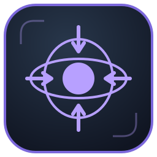
Ancre gravitationnelleCombustion de secoursDiscipline stellaireSynchronisation orbitaleÉvolution orbitale
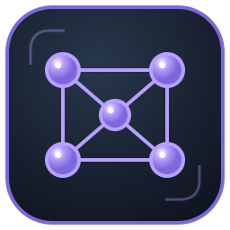
Matrice orbitale
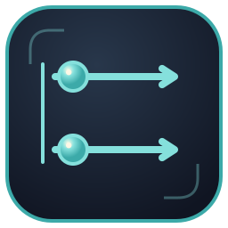
Commandement parallèleTranscendance des Formes
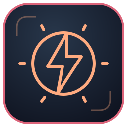
Noyau supercritiqueRéacteur autonomeCorps orbitalÉtat de SupernovaPropulsion stellaireÉgide vectorielleImpact vectoriel
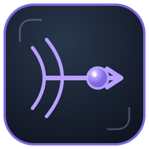
Impulsion forcéeTranslation orbitale
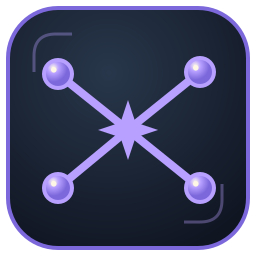
Convergence stellaire
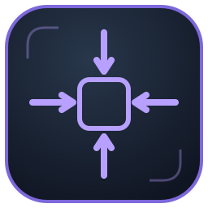
Compression gravitationnelleReconstitution structurelleForge stellaireCartographie gravitationnelleBalise orbitaleOnde de résonance
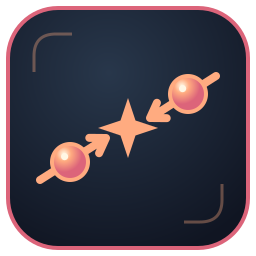
Vecteur de collision
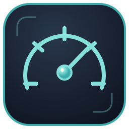
Accélération d’urgence
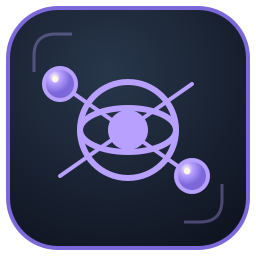
Singularité relayéeFlash photosphériquePassage orbital
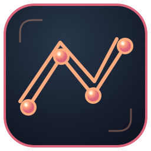
Rail orbital
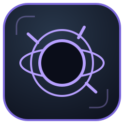
Horizon événementielDérivation structurelle
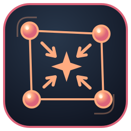
Effondrement de constellation
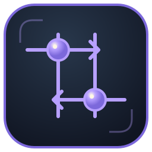
Réécriture vectorielle
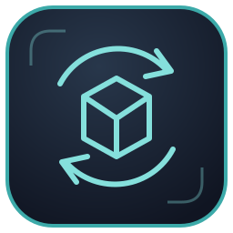
Reconfiguration instantanéeSillage apaisantPrésences apaisantesNOT YET — refuser la chuteSECOND DAWN — seconde auroreFamilier orbitalInvocation orbitale
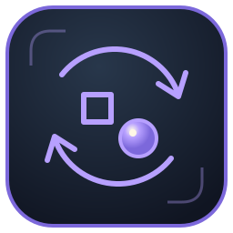
Changer de FormeRappel — retour du fragmentRappel du familier
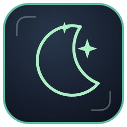
Repos long — restauration des familiersChamp d’inertie — Bastion BloodiedInvocation orbitaleFamilier orbitalChanger de Forme